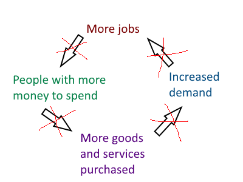

Chapter 9: Nations, nation-states, and internationalism (208-227)
1. Consider Figure 9-1 on p208 and read the quote by Archibald MacLeish on p209. How does the photograph suggest that humanity must deal with challenges, not only as individuals, but also as nations, nation-states, and as a global community?
When we look at the big picture, the human experience has been very shallow so far. The memories and experiences so far that we’ve made are limited in our tiny little world when in factual, the actual world around us is so big that we
can’t even comprehend its size.
This isn’t to say that other experiences have more value than others, but when given the thought, one must explore the big picture of the nature of the world around us. If we (humanity) do not plan this way, if we do not consider the things
outside our worldview, we end up in wars, conflict and many other problems.
2. Consider Figure 9-2. Why do you think Maslow organized needs as a hierarchy?
The purpose of a hierarchy is to order things in place of importance. In Maslow’s hierarchy, he put the theory forward that explains that humans have to meet certain needs before the higher needs can be satisfied to fulfill an individual.
I believe that his theory wasn’t perfect, because there were cases around the world that were exception to the theory.
"Needs and wants that motivate nation-states do not operate in isolation. They overlap, combine and build on one another in a complex relationship."
3. For EACH of the following goal or motive, provide one example of how a nation-state might attempt to achieve it.
- Economic stability
- Peace & security
- Self-determination
- Humanitarianism
Economic stability
Increasing employability could help a nation-state achieve economic stability. The increase of employability encourages the job-money-goods-demand feedback loop, which in turn, keeps a country’s economy growing.
Peace & security
To achieve peace and security, a country ought to implement effective policies which places the nation-state’s citizens within a secure and healthy environment. Foreign policies such as joining an international defense organization
can achieve this.
Self-determination
To achieve self-determination, a nation-state could revolt against its ruling state for their own sovereignty. In Canada’s case, Canada proved to Britain, that Canadians can stand up for themselves during the world wars. This was a
peaceful solution using diplomacy instead of war.
Humanitarianism
To promote humanitarianism, a nation-state can offer financial support towards a foreign nation or towards their own nation. Currently, Canada is focused on providing help domestically towards Canadians financially and medically.
4. Consider Figure 9-4 (p211) and read the quote by John Reid in “Voices”. Create a similar graphic to show how high unemployment might negatively affect economic stability.

5. What are some consequences for nations when citizens do not feel safe? Why might Canadians feel a fairly high sense of personal security?
When the citizens of a nation-state do not feel safe, this will ruin the nation-state. These individuals will start to become cynical, overtly aggressive and protective against each other. This is the collapse of stability, and with it
will bring economic, social and political collapse of stability.
6. Read p215 “The View From Here”. What is a failed state? Explain how the ideas expressed in these excerpts are link to the goals or motives of nations and states (economic stability, self-determination, peace & security, humanitarianism).
It was explained that failed leadership, lack of international assistance and patriotism caused the downfall of many nation-states. These three factors cause the loss of economic stability, the forfeit to pursue self-determination and
humanitarianism, and peace and security. This is because these three factors cause the nation-state to destabilize and lack the correct regulation that makes the gears within the nation-state machine functioning. Usually, this is the
cause of corrupt politics, where the motives of these governments are lopsided for their own selfish wants.
7. How might a policy of complete isolationism benefit a country or nation? How might it hurt it?
The benefits of isolationism are usually short-term. The point of it is to reduce the amount of damage your own nation-state will receive from external sources by limiting your nation-state’s international involvement. However, at the
same time when you close the gates to your country, you also remove the benefits that come with being internationally active. This is how complete isolationism can hurt a nation-state, and usually it is a long-term problem.
8. Read p220-221. Is isolationism a good response to world issues? Explain your answer.
Yes it is, depending on the extent and duration. Isolationism is beneficial when the benefits outweigh the costs, either short-term or long-term. Isolationism becomes detrimental when it is used improperly, for example when a nation-state
stops being isolationist after a short duration, when the benefits are within a long-term duration.
9. List the pros and cons for Canada of unilaterally disarming and giving up its armed forces. Consider how this would affect Canadian sovereignty and foreign policy, as well as what could be done with the money saved.
Pros:
- Relieved government budget. Government can use the money on other things.
Cons:
- Unemployment, therefore loss of economic stability.
- Loss of sovereignty
- Loss of law enforcement.
- Loss of Canadian presence and force externally.
- Loss of security, and thus peace.
- Inability to maintain Canadian peacekeeping missions, therefore Canada is not able to keep up its humanitarianism.
In conclusion, this is a very horrible idea.
10. What issue did Canada and the USA enter into a bilateral agreement for in 1991? Why is bilateral co-operation important when it comes to environmental issues?
They entered this agreement because both nation-states did not want to ruin themselves because of their problems, which affect either both of them. In 1991, the issue was environmental.
It is important for the agreement to be bilateral because if it were not, then the policies wouldn’t be regulated to be effective at dealing with the issue. When it comes to environmental issues for example, one country’s policies might’ve
become too strict while another’s is too lax.
11. Why do you think middle power countries such as Canada have traditionally chosen multilateral solutions to problems?
When these middle powers work together, they become stronger, are able to do more and exert more influence than otherwise.
12. Give an example of, a supranational organization. What are two consequences (positive/negative) that member countries of supranational organizations may encounter when they join the organization?
The European Union is an example of a supranational organization. The positives of joining one are the benefits that come along with membership (protection, free trade, support, etc). The negatives are that the members have to relinquish
some of their sovereignty
13. What do internationalists believe about collective responsibility? List TWO international organizations that have been created to address each of the following goals:
- Peace & security
- Economic stability
- Self-determination
- Humanitarianism
World Health organization:
Peace & security
WHO is responsible for containing dangerous pandemics, and informing the public about health concerns. One of their jobs is to make Earth a world free of disease.
Economic stability
Not necessarily one of their criteria, however WHO alleviates the pressure on a nation-state’s economy by treating the pandemic that is causing the pressure.
Self-determination
Not necessarily one of WHO’s jobs.
Humanitarianism
Their main job is to eradicate diseases and to inform everyone about health concerns to try to make the world a better place.
Arctic Council:
Peace & security
Their main job is to mediate between the countries that are working to establish presence in the arctic.
Economic stability
Economic stability within the arctic is regulated by this organization.
Self-determination
This organization is responsible for promoting the self-determination of indigenous populations and many arctic possessions from its members.
Humanitarianism
Not necessarily one of the Arctic Council’s jobs.
14. Read “Voices” on p227. Do you agree with Kofi Annan? Explain your answer.
I agree, those that exert power and influence are the ones responsible for much of the world’s division at present. China for example, is not too keen on giving up its sovereignty to the United States, who is aiming to expand its global
influence to reduce the Chinese government’s global influence.
Chapter 10: Foreign Policy and Internationalism (230-249)
15. What is foreign policy? Give 3 examples of how Canada’s foreign policy affects your own life.
Foreign policy: A plan of action that guides a government’s decisions about its official relations with other countries. Also called foreign affairs or external relations.
Many of Canada’s international trading policies is responsible for putting food on my plate.
The bilateral environmental agreement between Canada and the US is responsible for the air I breathe.
The free trade agreement between Canada and the US is responsible for the stuff I have.
16. How do democracies, such as Canada, differ from authoritarian governments in how foreign policy decisions are made?
Foreign policies, or any kind of government policy for that matter, are influenced by the press within a democratic nation-state. Within authoritarian governments, no influence is exerted from the public, instead the government commands
how its policies are structured.
17. List 3 ways nation-states promote internationalism through foreign policy. Give an example for each
Promoting Peace: By encouraging world peace, supportive initiatives from governments are able to promote internationalism. For example, the United Nations imposed economic sanctions on Iraq in order to force dictator Saddam Hussein to
cooperate with the UN.
Peacekeeping and Internationalism: This is the most obvious. When a nation-state joins an international organization, internationalism is promoted. Canada’s involvement with the United Nations is an example, so are the member states that
joined the European Union.
International Law and Agreements: This is also obvious. When nation-state agree on establishing particular law and policies, internationalism is promoted. For example, NAFTA between the US, Canada and Mexico is an example of how internationalism
was promoted because of the free flow of products between each nation.
18. Read p236. Were economic sanctions imposed on Iraq to force co-operation an effective foreign policy tool? Explain your response.
Judging from what I’ve read from the book, I need more information. However, I can say that economic sanctions are hard to be implemented effectively. Those that take the brunt of the sanctions are the nation-state’s citizens. There was
a theory that the purpose of the UN’s sanctions in Iraq was to make the people revolt against the leader. If the circumstances are not easily controlled, then these sanctions could become ineffective simply because the nation-state
hadn’t been majorly affected by it, as it would’ve been able to engage economically with other nation-states.
19. What is the role of the UN Security Council? What 3 guidelines must peacekeeping troops follow?
The role of the UN Security Council is responsible for maintaining international peace and security. They determine when and where a UN peace operation should be deployed.
Troops involved in peacekeeping missions must adhered to the following guidelines:
- Consent: Peacekeepers must respect sovereignty of the host country.
- Impartiality: Peacekeepers must not take sides.
- Self-defence: Peacekeepers may use force only to defend themselves.
20. How has 40+ years of participation in UN peacekeeping missions helped shape Canada’s national identity and foreign policy?
Canada’s national identity is reminded by its peacekeeping missions as an international one, as well as its foreign policy. Canadians contribute to much of the humanity’s progress to establish global peace and cooperation.
21. What is the role of the UN’s International Court of Justice? Why might some countries be reluctant to accept its authority?
The role of the International Court of Justice, or World Court, is to settle international disputes peacefully. Countries become reluctant to accept its authority because they would have to give up parts of their sovereignty and influence.
22. Complete the following chart on International Law and Agreements
International Law of the Sea
Key points:
- Responsible for arranging the offshore territorial projections of countries.
- Responsible for preserving underwater Ocean heritage sites.
- Responsible for maintaining the seas as free and open territory.
Antartica
Key points:
- Antarctica shall be used for peaceful purposes only.
- Freedom of scientific investigation in Antarctica and cooperation towards those sorts of goals shall continue.
- Scientific observations and results from Antarctica shall be exchanged and made freely available.
Landmines (p248)
Key points:
- Landmines are everywhere, can kill anything, but we don’t know where they are. Therefore, they are an invisible and deadly threat to mankind.
- The response is to either remove landmines after a war, or to ban them indefinitely.
- The choice, made by NGO’s all over the world, is to permanently ban landmines.
23. What is Gross National Income (GNI)?
The total values of goods and services produced in a country in a year, whether inside or outside the country’s borders.
24. What is tied aid? Should donor countries place restrictions on the way foreign aid money is spent? Explain your response.
“Help that is given with strings attached. These strings may include agreements that the country receiving the aid will buy goods and services only from the country or organization supplying the aid.”
Yes, if donor countries did not do this, then how are the benefits of the cost of their decision ensured?
Chapter 11: Internationalism and Nationalism
Read pages 252-256
1. Marshall McLuhan used the phrase “global village” to express his belief that the people of the world were becoming more closely linked than ever. Is the idea of nationalism out of date – or is it more important than ever?
The idea of nationalism is still important, as it defines the root of an individual’s history. Without nationalism, a person is essentially forfeiting their history.
2. Define “voluntary balkanization”
The separation of like-minded people into isolated groups that are hostile to people whose values differ from their own. This separation may result in a loss of shared experiences and values and can harm the structure of democratic societies.
Read pages 257-261
3. Define responsibility to protect.
A doctrine that says the United Nations must protect people within a state when that state violates or fails to uphold the rights and welfare of its own citizens.
4. Define common human heritage. List 3 examples of Material Culture and 3 examples of Intangible Culture identified as common human heritage.
The cultural inheritance from the past that all people share and that is preserved in world heritage sites, traditional skills and knowledge, and the arts.
Material culture:
- France: Chartres Cathedral.
- Lebanon: City of Tyre.
- Mali: City of Timbuktu.
Intangible culture:
Read pages 264-269
5. Define trickle-down effect.
The theory that when people in developed countries have more money to spend, they will buy goods and services offered by businesses in less developed countries and that this spending will eventually help strengthen economies in the developing world.
6. Create a chart outlining the benefits and drawbacks of participating in an economic organization such as the WTO or EU?
Benefits:
- Reduction of trade barriers, which promote growth and development, which improves standards of living.
- Establishes peace, security and justice.
- Possible integration of economies.
- Establishes an international community.
- Reduction of aggression between neighbouring nation-states.
Drawbacks:
- May threaten national identity.
- Reduces sovereignty.
- The international organization may impose penalties.
- The international organization may force a nation-state to act on decisions which are not in their interests.
7. Would you describe Mary Simon as a nationalist or an internationalist? Cite evidence to support your judgment.
Mary Simon is a nationalist, as she acts in order to promote the interests of aboriginals living in the north of Canada and around the Arctic.
“When Prime Minister Jean Chretien appointed Simon Canada’s first ambassador for circumpolar affairs in 1994, she spearheaded the initiative to create the Arctic Council and became its first chair. She is now president of the Inuit Tapiriit Kanatami, an organization that represents the 53,000 Inuit of Canada’s North”.
8. Read “Taking Turns” on p.268. In your opinion, how much sovereignty should Canada be willing to give up for the sake of pursuing internationalism?
All of these things depend on the interests of Canadians. Canada should focus on its citizens by educating and listening to them in order to support them. If Canadians are willing to risk some sovereignty to pursue internationalism, then Canada would give up said sovereignty.
9. Do any of the speakers on p.269 see a positive future for nationalism AND internationalism? Explain your response. Cite evidence from excerpts.
Eric Kierans
He sees that nation-states become the cogs of the machine, that is, the international group. He warns that internationalism will result in a country’s specialization, and hence the apparent loss of freedom for a nation-state to exert its resource and manpower for something else, something enjoyable for them perhaps. He does not really see a positive future with these regards.
Andrew Herod
He argues that internationalism will in the end, result in people becoming more and more focused on being local than rather working with each other, as a result of privacy being reduced from the interconnectedness of the globe. He does not see that globalization will end up connecting Earth’s populations, it will instead divide them further as nationalism will rise from the threat of assimilation from the fact that the world is interconnected.
J. Michael Adams and Angelo Carfagna
They both see an international world with a bright future. They suggest, that people ought to focus on our commonalities rather than our differences from each other. This is because, they believe that it will bring goodness into the world, the same way that people came together despite how different they are in order to abolish global issues such as hunger, slavery and other forms of injustice, for they have decided to work towards those missions together with themselves.
Chapter 12: Internationalism and Global Issues
Read pages 272-285
10. Complete the Chart on the following page
Climate Change (also review pages 282-283)
How has internationalism been used to address this issue?
The Kyoto protocol was one method the international organization took to address climate change. In summary, countries must meet particular decreases in greenhouse emissions. There were countries that were exempt from this however, such as developing countries of those of China and India.
Do you think internationalism has been effective in addressing this issue? Explain using evidence:
This was not particularly effective. There were many disagreements between countries regarding the costs of the environmental benefits. There were many arguments between nations that deem the Kyoto protocol to be too hampering on a nation’s industry.
Spread of Disease
How has internationalism been used to address this issue?
International community provides support by mitigating spread of disease, supplying medical equipment and personnel across the globe, financial aid from local parts to nation-wide areas.
Do you think internationalism has been effective in addressing this issue? Explain using evidence:
Yes, I believe that the international community is doing a good job at mitigating the devastating effects of pandemics. We have now established an effective plan with dealing pandemics, where people live indoors in order to mitigate the spread of disease. Having lived in a timeline of human history where the internet exists, this method has become viable than ever.
Poverty and Hunger
How has internationalism been used to address this issue?
Many NGOs offer support to many developing and developed nations. In our modern time, when the pandemic is still raging, governments have offered local humanitarian and financial support.
Do you think internationalism has been effective in addressing this issue? Explain using evidence:
Hunger and poverty remains rampant in so many developing countries, and even within developed countries.
Human Rights
How has internationalism been used to address this issue?
Human rights have been declared in our modern world. No one is privileged to have basic human rights and no one can take them away. The United Nations investigate violations of these rights all over the world. They also support activists willing to pressure governments to enforce these rights.
Do you think internationalism has been effective in addressing this issue? Explain using evidence:
There are some parts in the world where human rights are still being violated. While the United Nations have a declaration of human rights, it is not a law. I believe that the international community is not doing a good job with regards to enforcing human rights. These rights have to be affirmed as a law and not just a declaration.
11. Is water a resource like oil? Should private corporations be able to take water and sell it wherever there is a demand?
Water should not be treated as oil. Why? Because a lack of water will kill populations, wherein a lack of oil may not necessarily do so. The point is, that water is a human need, but oil is not. If one were to monopolize water, then we would live in a democratic world that is no different from an authoritarian one. Water, and thus human lives, should not be controlled, it must be free.
12. Should Canada’s water be reserved for Canadians, or is Canada (and other water-rich countries) obligated to share their water with other countries?
We must share our water. At the same time, other countries must share their water with us. Regarding this issue, an agreement between countries must form to tackle it.
13. When the World Bank and the IMF lend money to a country, should they have the right to dictate how that country manages its national budget?
Yes they should have the right, but they can only dictate the country’s national budget to a limited extent. The nation-state’s sovereignty must be preserved, but at the same time, the loan given by these organizations must not be used by the nation-state to wreck havoc and to limit the freedom of others.
14. Define odious debt. Do you agree with Probe International’s or William Easterly’s position on repaying odious debt? Justify your answer.
“A debt that is incurred by a despotic power, not to meet the needs of the people of the country but to strengthen the despotic regime.”
I believe that this should be debated for every circumstance. There is no clear answer to this. Should odious debt incur, then the international community must help the fallen nation-state. The point is to not create another Nazi-germany. This time, the world must not isolate itself and the nations of Earth have to support each other. Otherwise, the nation-state should still be regulated. I agree with both. Mismanage runs rampant across corrupt governments, but this is my argument for the intervention of international communities.
Read pp.288-291
15. Is internationalism the only way to address contemporary global issues? Justify your answer.
First and foremost, every problem must be first solved locally. The point of internationalism is to provide extra support and aid if necessary. If the problem can’t be solved using local services and resources, then the international community has to step in to provide aid. When the international community is not needed, then they should not intervene because it is unnecessary. Internationalism is not the only way to address contemporary global issues, it should not replace local services that can deal with the problem if needed.